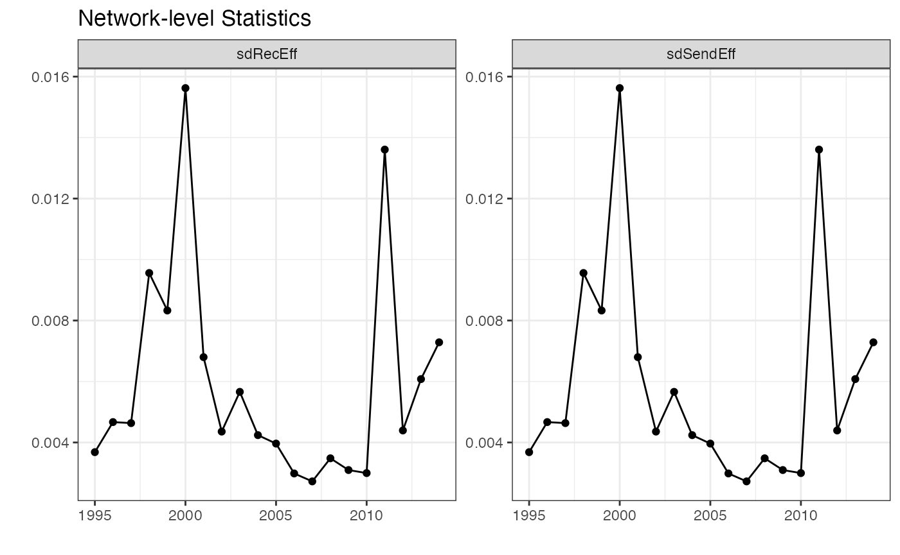

Introduction to the netify Package
Ha Eun Choi, Cassy Dorff, Colin Henry, and Shahryar Minhas
2023-12-18
netify_introduction.RmdOverview
The goal of this vignette is to provide a wholistic overview of how
to use the netify package.
netify is a set of network analysis tools. The package
creates network objects, summarizes graphs, and analyzes these objects.
netify also provides a bridge to other major network
modeling packages so that users can seamlessly continue their work with
available statistical modeling packages.
netify provides a suite of primary functions to help
achieve these goals:
In addition, netify includes additional functions that
help users bridge between netify and other network
packages:
Install
In this document, we provide a brief tutorial on how to get started
using the netify package. netify can be
installed via devtools:
Starting with dyadic data
The netify package allows users to begin with dyadic
data wherein each row of the data represents an event or an exchange
between actors, entities, or groups. In dyadic data, each row typically
contains information about which actors are involved in the event. We
can transform this data into a matrix where each actor represents rows
and columns and exchanges between the actors fill the values of the
matrix.
To learn more about network analysis (with an emphasis on conflict networks) see below for suggested reading:
Cranmer, S. J., Desmarais, B. A., & Morgan, J. W. (2020). Inferential network analysis. Cambridge University Press.
Dorff, C., & Ward, M. D. (2013). Networks, dyads, and the social relations model. Political Science Research and Methods, 1(2), 159-178.
Dorff, C., Gallop, M., & Minhas, S. (2020). Networks of violence: Predicting conflict in Nigeria. The Journal of Politics, 82(2), 476-493.
Larson, J. M. (2021). Networks of conflict and cooperation. Annual Review of Political Science, 24, 89-107.
Minhas, S., Dorff, C., Gallop, M. B., Foster, M., Liu, H., Tellez, J., & Ward, M. D. (2022). Taking dyads seriously. Political Science Research and Methods, 10(4), 703-721.
What data is in the netify package?
We include data examples drawn from the peacesciencer
package and the ICEWS data.
The peacesciencer package provides tools for
constructing datasets for peace science scholarship.
- See for more information. Users will need to install this package to run the examples below.
The ICEWS (Integrated Crisis Early Warning Systems) data example is a sample of interstate conflict and cooperation counts between 2002 to 2014. The dataset is for illustration purposes only. It is not to be used for research or inference.
- The data is dyad-year data where the information is structured by yearly edgelists.
- Boschee, Elizabeth; Lautenschlager, Jennifer; O’Brien, Sean; Shellman, Steve; Starz, James, 2018, “ICEWS Weekly Event Data”, https://doi.org/10.7910/DVN/QI2T9A, Harvard Dataverse, V359.
To begin, let’s create a dyadic dataset to work with.
#> {peacesciencer} includes additional remote data for separate download. Please type ?download_extdata() for more information.
#> This message disappears on load when these data are downloaded and in the package's `extdata` directory.
#> ── Attaching core tidyverse packages ──────────────────────── tidyverse 2.0.0 ──
#> ✔ dplyr 1.1.3 ✔ readr 2.1.4
#> ✔ forcats 1.0.0 ✔ stringr 1.5.1
#> ✔ ggplot2 3.4.4 ✔ tibble 3.2.1
#> ✔ lubridate 1.9.3 ✔ tidyr 1.3.0
#> ✔ purrr 1.0.2
#> ── Conflicts ────────────────────────────────────────── tidyverse_conflicts() ──
#> ✖ dplyr::filter() masks stats::filter()
#> ✖ dplyr::lag() masks stats::lag()
#> ℹ Use the conflicted package (<http://conflicted.r-lib.org/>) to force all conflicts to become errors
#> Joining with `by = join_by(ccode1, ccode2, year)`
#> Joining with `by = join_by(ccode1, ccode2, year)`
#> add_cow_mids() IMPORTANT MESSAGE: By default, this function whittles dispute-year data into dyad-year data by first selecting on unique onsets. Thereafter, where duplicates remain, it whittles dispute-year data into dyad-year data in the following order: 1) retaining highest `fatality`, 2) retaining highest `hostlev`, 3) retaining highest estimated `mindur`, 4) retaining highest estimated `maxdur`, 5) retaining reciprocated over non-reciprocated observations, 6) retaining the observation with the lowest start month, and, where duplicates still remained (and they don't), 7) forcibly dropping all duplicates for observations that are otherwise very similar.
#> See: http://svmiller.com/peacesciencer/articles/coerce-dispute-year-dyad-year.htmlUsing netify()
cross-sectional networks
Dyadic data like this represents exchanges between actors or entities
and can be thought of as network data. To analyze dyadic data as a
network, we can first transform dyadic data into an adjacency matrix
using netify().
Using netify(), we can convert dyadic data into
different network formats:
- a cross-sectional, symmetric, and weighted network
- a cross-sectional, unsymmetric, and weighted network
- a cross-sectional, symmetric, and unweighted network
- a cross-sectional, unsymmetric, and unweighted network
For illustration purposes, let’s think of a cross-sectional network as one time point of the network, or as an aggregated network (for example, several years of dyadic data aggregated into one time period). Later, we will show you how to create a longitudinal network.
The function netify() takes a single data.frame:
dyad_data. It returns a netlet object.
netify(
dyad_data,
actor1=NULL, actor2=NULL, time=NULL,
symmetric=TRUE,
mode='unipartite',
weight=NULL,
sum_dyads=TRUE,
actor_time_uniform=TRUE,
actor_pds=NULL,
diag_to_NA=TRUE,
missing_to_zero=TRUE,
output_format = ifelse(is.null(time), "cross_sec", "longit_list"),
nodal_vars=NULL,dyad_vars=NULL, dyad_vars_symmetric=NULL
)dyad_data is a dyadic data.frame that should have at
least the following variables used to specify actors:
-
actor1: character indicating actor 1 variable in the data -
actor2: character indicating actor 2 variable in the data
netify_type is a type of netlet object (‘cross-sec’,
‘longit_list’, or ‘longit_array’).
If the data is symmetric, then the order of the actors does not matter. If the data is not symmetric, then we can think of actor 1 as the ‘sender’ and actor 2 as the ‘receiver’ in a given exchange.
Other arguments:
-
weight: character indicating weighted edge variable in the data, default isweight=NULL -
sum_dyads: logical indicating whether to sum up theweightvalue when there exists repeating dyads. -
symmetric: logical indicating whether ties are symmetric, default isTRUE -
nodal_vars: a vector of which variables from nodeData should be merged -
dyad_vars: a vector of which variables from nodeData should be merged -
dyad_vars_symmetric: logical vector indicating whether ties are symmetric, default isTRUE -
isolates: logical indicating whether to include isolates, default isFALSE -
diag_to_NA: logical indicating whether diagonals should be set to NA, default isTRUE -
missing_to_zerological indicating whether missing values should be set to zero, default isTRUE -
nodal_data: nodal data attribute -
dyad_data: dyad data attribute -
graph_data: graph data attribute
Let’s transform our dyadic dataset, cow_dyads, into an
adjacency matrix for analysis. It is important we give the object a
name. In this case, we are creating an aggregated matrix across all
years and summing repeating dyads.
mid_network <- netify(
cow_dyads,
actor1='ccode1', actor2='ccode2',
weight='cowmidonset',
sum_dyads=TRUE, symmetric=TRUE,
diag_to_NA=TRUE, missing_to_zero=TRUE)
#> ! Warning: Converting `actor1` and/or `actor2` to character vector(s).
mid_network
#> ✔ Hello, you have created network data, yay!
#> • Cross-Sectional
#> • Unipartite
#> • Symmetric
#> • Sum of Weights from `cowmidonset`
#> • No Loops Allowed
#> • Cross-Sectional
#> • # Unique Row Actors: 195
#> • # Unique Column Actors: 195
#> • # Unique Actors: 195
#> nLoops nEdges density recip propNA
#> 1 cowmidonset N/A 646 0.08173407 N/A N/A
#> • Nodal Features: None
#> • Dyad Features: None
#> • Graph Features: NoneThe above code creates a basic network using conflict between states
(MIDs) as the weight variable that characterizes the links or edges
(links) in our network. The resulting network object is at the core of
the netify package and is what we will pass to most of the
other functions.
Once we have successfully made a new adjacency matrix from our dyadic
data, netify returns a helpful message. The output tells us
a number of important features about the network: if is symmetric, the
number of actors, and the number of edges (links or ties) between
actors. Note that we have provided a weight value (you must supply a
weight if you chose to sum up dyadic interactions). In this case, the
output tells us the network is ‘cross-sectional’ because we have
aggregated the years into one time slice. If there are no repeating
dyads, then the function returns the weight for each i,j. If you have
repeating dyads like we do in this example and you want to sum the
weight variable for every time i,j interact in the data (for example, if
they appear multiple times across ‘years’), you need to set
sum_dyads=TRUE).
What if we wanted a network that represented conflict not as a count of interactions but as a binary outcome? First, we subset the original data to create an edgelist like format. Here we only include edges when they are not zero (i.e., they have a conflict). Next we use netify to create a matrix. Here we will not specify a weight value and we will not sum dyads.
cow_dyad_conflict_onset <- cow_dyads %>%
filter(
cowmidonset > 0
)
any_mid_network <- netify(
cow_dyad_conflict_onset,
actor1='ccode1', actor2='ccode2',
sum_dyads=FALSE, symmetric=TRUE,
diag_to_NA=TRUE, missing_to_zero=TRUE)
#> ! Warning: Converting `actor1` and/or `actor2` to character vector(s).
#> ! Warning: there are repeating dyads within time periods in the dataset. When `weight` is not supplied and `sum_dyads` is set to FALSE, edges in the outputted adjacency matrix will represent binary interactions between actors.
any_mid_network
#> ✔ Hello, you have created network data, yay!
#> • Cross-Sectional
#> • Unipartite
#> • Symmetric
#> • Binary Weights
#> • No Loops Allowed
#> • Cross-Sectional
#> • # Unique Row Actors: 148
#> • # Unique Column Actors: 148
#> • # Unique Actors: 148
#> nLoops nEdges density recip propNA
#> 1 weight1 N/A 646 0.02969296 N/A N/A
#> • Nodal Features: None
#> • Dyad Features: None
#> • Graph Features: NoneNow that we have a basic network to inspect, let’s take a look at the
resulting network object. The quickest and easiest way to do this is
using the peek function.
peek(mid_network, 20)
#> 100 101 110 115 130 135 140 145 150 155 160 165 2 20 200 205 210 211 212
#> 100 NA 16 0 0 10 0 0 0 0 0 0 0 0 0 0 0 0 0 0
#> 101 16 NA 4 0 0 0 0 0 0 0 0 0 4 0 0 0 0 0 0
#> 110 0 4 NA 2 0 0 0 0 0 0 0 0 0 0 0 0 0 0 0
#> 115 0 0 2 NA 0 0 0 0 0 0 0 0 0 0 0 0 0 0 0
#> 130 10 0 0 0 NA 6 0 0 0 0 0 0 0 0 0 0 0 0 0
#> 135 0 0 0 0 6 NA 2 0 0 0 0 0 0 0 0 0 0 0 0
#> 140 0 0 0 0 0 2 NA 0 0 0 0 0 0 0 0 0 0 0 0
#> 145 0 0 0 0 0 0 0 NA 0 0 0 0 0 0 0 0 0 0 0
#> 150 0 0 0 0 0 0 0 0 NA 0 0 0 0 0 0 0 0 0 0
#> 155 0 0 0 0 0 0 0 0 0 NA 0 0 0 0 2 0 0 0 0
#> 160 0 0 0 0 0 0 0 0 0 0 NA 0 0 0 2 0 0 0 0
#> 165 0 0 0 0 0 0 0 0 0 0 0 NA 0 0 0 0 0 0 0
#> 2 0 4 0 0 0 0 0 0 0 0 0 0 NA 2 0 0 0 0 0
#> 20 0 0 0 0 0 0 0 0 0 0 0 0 2 NA 0 0 0 0 0
#> 200 0 0 0 0 0 0 0 0 0 2 2 0 0 0 NA 0 0 0 0
#> 205 0 0 0 0 0 0 0 0 0 0 0 0 0 0 0 NA 0 0 0
#> 210 0 0 0 0 0 0 0 0 0 0 0 0 0 0 0 0 NA 0 0
#> 211 0 0 0 0 0 0 0 0 0 0 0 0 0 0 0 0 0 NA 0
#> 212 0 0 0 0 0 0 0 0 0 0 0 0 0 0 0 0 0 0 NA
#> 220 0 0 0 0 0 0 0 0 0 0 0 0 0 0 0 0 0 0 0
#> 220
#> 100 0
#> 101 0
#> 110 0
#> 115 0
#> 130 0
#> 135 0
#> 140 0
#> 145 0
#> 150 0
#> 155 0
#> 160 0
#> 165 0
#> 2 0
#> 20 0
#> 200 0
#> 205 0
#> 210 0
#> 211 0
#> 212 0
#> 220 NA
peek(any_mid_network, 20)
#> 100 101 110 115 130 135 140 155 160 2 20 200 205 210 211 212 220 225 230
#> 100 NA 1 0 0 1 0 0 0 0 0 0 0 0 0 0 0 0 0 0
#> 101 1 NA 1 0 0 0 0 0 0 1 0 0 0 0 0 0 0 0 0
#> 110 0 1 NA 1 0 0 0 0 0 0 0 0 0 0 0 0 0 0 0
#> 115 0 0 1 NA 0 0 0 0 0 0 0 0 0 0 0 0 0 0 0
#> 130 1 0 0 0 NA 1 0 0 0 0 0 0 0 0 0 0 0 0 0
#> 135 0 0 0 0 1 NA 1 0 0 0 0 0 0 0 0 0 0 0 0
#> 140 0 0 0 0 0 1 NA 0 0 0 0 0 0 0 0 0 0 0 0
#> 155 0 0 0 0 0 0 0 NA 0 0 0 1 0 0 0 0 0 0 0
#> 160 0 0 0 0 0 0 0 0 NA 0 0 1 0 0 0 0 0 0 0
#> 2 0 1 0 0 0 0 0 0 0 NA 1 0 0 0 0 0 0 0 0
#> 20 0 0 0 0 0 0 0 0 0 1 NA 0 0 0 0 0 0 0 1
#> 200 0 0 0 0 0 0 0 1 1 0 0 NA 0 0 0 0 0 0 1
#> 205 0 0 0 0 0 0 0 0 0 0 0 0 NA 0 0 0 0 0 0
#> 210 0 0 0 0 0 0 0 0 0 0 0 0 0 NA 0 0 0 0 0
#> 211 0 0 0 0 0 0 0 0 0 0 0 0 0 0 NA 0 0 0 0
#> 212 0 0 0 0 0 0 0 0 0 0 0 0 0 0 0 NA 0 0 0
#> 220 0 0 0 0 0 0 0 0 0 0 0 0 0 0 0 0 NA 0 0
#> 225 0 0 0 0 0 0 0 0 0 0 0 0 0 0 0 0 0 NA 0
#> 230 0 0 0 0 0 0 0 0 0 0 1 1 0 0 0 0 0 0 NA
#> 235 0 0 0 0 0 0 0 0 0 0 1 0 0 0 0 0 0 0 0
#> 235
#> 100 0
#> 101 0
#> 110 0
#> 115 0
#> 130 0
#> 135 0
#> 140 0
#> 155 0
#> 160 0
#> 2 0
#> 20 1
#> 200 0
#> 205 0
#> 210 0
#> 211 0
#> 212 0
#> 220 0
#> 225 0
#> 230 0
#> 235 NALongitudinal networks
Sometimes we have data that contains information about time and we
perserve the temporal information to create longitudinal networks. If we
want to create an object wherein each network represents a single time
period in our data then we will need to create a longitudinal
network. We can do this using the netify() function.
Relevant arguments:
-
netify_typeis a type of netlet object (‘cross-sec’, ‘longit_list’, or ‘longit_array’). For a longitudinal network, ‘longit_list’, or ‘longit_array’ should be given. -
sum_dyads: a logical indicating whether or not to assume the actors in the network (or nodes) are the same across an entire time series. This is more relevant for time series data. -
time: character indicating the variable representing time in the data. If none is provided, the function assumes the network is cross-sectional. -
actor_time_uniform: logical indicating whether to assume actors are the same across the full time series observed in the data.TRUEmeans that actors are the same across the full time series observed in the data.FALSEmeans that actors come in and out of the observed data and their “existence” should be determined by the data, meaning that their first year of existence will be determined by the time point of their first event and their last year of existence by the time point of their last event. -
actor_pds: a data.frame indicating start and end time point for every actor, this can be created usingget_actor_time_info.R, unless provided this will estimated for the user based on their choice ofactor_time_uniform.
netify(
dyad_data,
actor1, actor2,
sum_dyads,
time,
actor_time_uniform=TRUE,
actor_pds=NULL,
nodal_vars=NULL,dyad_vars=NULL, dyad_vars_symmetric=NULL,
diag_to_NA=TRUE, missing_to_zero=TRUE
)Two key arguments help us understand what kind of longitudinal
network we want to create. time denotes which variable from
the data represents time. actor_time_uniform indicates
whether or not the actors in the network change over time. If the actors
do not change, then we set actor_time_uniform=TRUE, and
netify returns a three-dimensional array in which the first
two dimensions correspond to actors and the third corresponds to
time.
If the actors change, then we set
actor_time_uniform = FALSE and the function returns a list
object. Each object in the list will be a matrix at a given time point.
The dimensions of each matrix inside the list will depend on how many
actors (or nodes) “exist” for that time slice.
Let’s try to create an over-time network using the year
variable in cow_dyads. For longitudinal networks, we also
need to consider whether or not the nodes, or actors, change overtime in
our network. In our case, countries exit and enter the international
system so we will set actor_time_uniform=FALSE.
Our dataset also includes information about actors and dyadic
relationships. The netify function also allows users to add nodal and
dyadic variables into the network object. Below, we add covariate
information for regime type to the actors (nodes) in the network using
the nodal_vars parameter. We also add information about the
geographical distance between each country in a given dyads using the
dyad_vars parameter.
mid_long_network <- netify(
cow_dyads,
actor1='ccode1', actor2='ccode2', time='year',
weight='cowmidonset',
actor_time_uniform=FALSE,
sum_dyads=FALSE, symmetric=TRUE,
diag_to_NA=TRUE, missing_to_zero=FALSE,
nodal_vars = c('v2x_polyarchy1', 'v2x_polyarchy2'),
dyad_vars = c('capdist'),
dyad_vars_symmetric = c(TRUE, FALSE)
)
#> ! Warning: Converting `actor1` and/or `actor2` to character vector(s).
mid_long_network
#> ✔ Hello, you have created network data, yay!
#> • Longitudinal
#> • Unipartite
#> • Symmetric
#> • Weights from `cowmidonset`
#> • No Loops Allowed
#> • Longitudinal: 20 Periods
#> • # Unique Row Actors: 195
#> • # Unique Column Actors: 195
#> • # Unique Actors: 195
#> nLoops nEdges density recip propNA
#> 1 cowmidonset N/A 1546 0.002111837 N/A 0
#> • Nodal Features: v2x_polyarchy1, v2x_polyarchy2
#> • Dyad Features: capdist
#> • Graph Features: NoneWe now have a longitudinal network and this is reflected in the output which notes there are 23 time periods. Our netlet object is now a list where in each element reflects a time period of the network.
At this point we might wonder, what would have happened if we set
actor_time_uniform=FALSE? We want to set this parameter to
TRUE if the number of actors, or nodes, in the network changes over time
and false if it does not. Since we previously told the function that the
actors change over time, let’s see if the number of actors changes for
each timeslice.
head(lapply(mid_long_network, dim))
#> $`1995`
#> [1] 187 187
#>
#> $`1996`
#> [1] 187 187
#>
#> $`1997`
#> [1] 187 187
#>
#> $`1998`
#> [1] 187 187
#>
#> $`1999`
#> [1] 190 190
#>
#> $`2000`
#> [1] 191 191Our actors are changing over time! And the resulting object is an organized list of networks over time.
is.list(mid_long_network)
#> [1] TRUEYou can inspect these outputs on your own. Or you can use
netify’s helper functions. Note, to choose a specific time
point, such as year, you must pass it to the parameter using quotations.
For example, to take a peek at our network at different time points:
# use the index location
peek(mid_long_network, when_to_peek = c(20,23), what_to_peek = 10)
#> $`2014`
#> 100 101 110 115 130 135 140 145 150 155
#> 100 NA 0 0 0 0 0 0 0 0 0
#> 101 0 NA 0 0 0 0 0 0 0 0
#> 110 0 0 NA 0 0 0 0 0 0 0
#> 115 0 0 0 NA 0 0 0 0 0 0
#> 130 0 0 0 0 NA 0 0 0 0 0
#> 135 0 0 0 0 0 NA 0 0 0 0
#> 140 0 0 0 0 0 0 NA 0 0 0
#> 145 0 0 0 0 0 0 0 NA 0 0
#> 150 0 0 0 0 0 0 0 0 NA 0
#> 155 0 0 0 0 0 0 0 0 0 NA
peek(mid_long_network, when_to_peek = c('2012'), what_to_peek = 30)
#> $`2012`
#> 100 101 110 115 130 135 140 145 150 155 160 165 2 20 200 205 210 211 212
#> 100 NA 0 0 0 0 0 0 0 0 0 0 0 0 0 0 0 0 0 0
#> 101 0 NA 0 0 0 0 0 0 0 0 0 0 0 0 0 0 0 0 0
#> 110 0 0 NA 0 0 0 0 0 0 0 0 0 0 0 0 0 0 0 0
#> 115 0 0 0 NA 0 0 0 0 0 0 0 0 0 0 0 0 0 0 0
#> 130 0 0 0 0 NA 0 0 0 0 0 0 0 0 0 0 0 0 0 0
#> 135 0 0 0 0 0 NA 0 0 0 0 0 0 0 0 0 0 0 0 0
#> 140 0 0 0 0 0 0 NA 0 0 0 0 0 0 0 0 0 0 0 0
#> 145 0 0 0 0 0 0 0 NA 0 0 0 0 0 0 0 0 0 0 0
#> 150 0 0 0 0 0 0 0 0 NA 0 0 0 0 0 0 0 0 0 0
#> 155 0 0 0 0 0 0 0 0 0 NA 0 0 0 0 0 0 0 0 0
#> 160 0 0 0 0 0 0 0 0 0 0 NA 0 0 0 1 0 0 0 0
#> 165 0 0 0 0 0 0 0 0 0 0 0 NA 0 0 0 0 0 0 0
#> 2 0 0 0 0 0 0 0 0 0 0 0 0 NA 0 0 0 0 0 0
#> 20 0 0 0 0 0 0 0 0 0 0 0 0 0 NA 0 0 0 0 0
#> 200 0 0 0 0 0 0 0 0 0 0 1 0 0 0 NA 0 0 0 0
#> 205 0 0 0 0 0 0 0 0 0 0 0 0 0 0 0 NA 0 0 0
#> 210 0 0 0 0 0 0 0 0 0 0 0 0 0 0 0 0 NA 0 0
#> 211 0 0 0 0 0 0 0 0 0 0 0 0 0 0 0 0 0 NA 0
#> 212 0 0 0 0 0 0 0 0 0 0 0 0 0 0 0 0 0 0 NA
#> 220 0 0 0 0 0 0 0 0 0 0 0 0 0 0 0 0 0 0 0
#> 221 0 0 0 0 0 0 0 0 0 0 0 0 0 0 0 0 0 0 0
#> 223 0 0 0 0 0 0 0 0 0 0 0 0 0 0 0 0 0 0 0
#> 225 0 0 0 0 0 0 0 0 0 0 0 0 0 0 0 0 0 0 0
#> 230 0 0 0 0 0 0 0 0 0 0 0 0 0 0 1 0 0 0 0
#> 232 0 0 0 0 0 0 0 0 0 0 0 0 0 0 0 0 0 0 0
#> 235 0 0 0 0 0 0 0 0 0 0 0 0 0 0 0 0 0 0 0
#> 255 0 0 0 0 0 0 0 0 0 0 0 0 0 0 0 0 0 0 0
#> 290 0 0 0 0 0 0 0 0 0 0 0 0 0 0 0 0 0 0 0
#> 305 0 0 0 0 0 0 0 0 0 0 0 0 0 0 0 0 0 0 0
#> 31 0 0 0 0 0 0 0 0 0 0 0 0 0 0 0 0 0 0 0
#> 220 221 223 225 230 232 235 255 290 305 31
#> 100 0 0 0 0 0 0 0 0 0 0 0
#> 101 0 0 0 0 0 0 0 0 0 0 0
#> 110 0 0 0 0 0 0 0 0 0 0 0
#> 115 0 0 0 0 0 0 0 0 0 0 0
#> 130 0 0 0 0 0 0 0 0 0 0 0
#> 135 0 0 0 0 0 0 0 0 0 0 0
#> 140 0 0 0 0 0 0 0 0 0 0 0
#> 145 0 0 0 0 0 0 0 0 0 0 0
#> 150 0 0 0 0 0 0 0 0 0 0 0
#> 155 0 0 0 0 0 0 0 0 0 0 0
#> 160 0 0 0 0 0 0 0 0 0 0 0
#> 165 0 0 0 0 0 0 0 0 0 0 0
#> 2 0 0 0 0 0 0 0 0 0 0 0
#> 20 0 0 0 0 0 0 0 0 0 0 0
#> 200 0 0 0 0 1 0 0 0 0 0 0
#> 205 0 0 0 0 0 0 0 0 0 0 0
#> 210 0 0 0 0 0 0 0 0 0 0 0
#> 211 0 0 0 0 0 0 0 0 0 0 0
#> 212 0 0 0 0 0 0 0 0 0 0 0
#> 220 NA 0 0 0 0 0 0 0 0 0 0
#> 221 0 NA 0 0 0 0 0 0 0 0 0
#> 223 0 0 NA 0 0 0 0 0 0 0 0
#> 225 0 0 0 NA 0 0 0 0 0 0 0
#> 230 0 0 0 0 NA 0 0 0 0 0 0
#> 232 0 0 0 0 0 NA 0 0 0 0 0
#> 235 0 0 0 0 0 0 NA 0 0 0 0
#> 255 0 0 0 0 0 0 0 NA 0 0 0
#> 290 0 0 0 0 0 0 0 0 NA 0 0
#> 305 0 0 0 0 0 0 0 0 0 NA 0
#> 31 0 0 0 0 0 0 0 0 0 0 NAFinally, we might want to supply our own set of actors with custom
start and end years. To do this, use the actors_pds
argument which allows us to pass a data.frame to netify
with actors’ start and end years.
actor_comp <- data.frame(
actor = c(2, 365, 220, 710),
min_time = c(1980, 1980, 1991, 1980),
max_time = c(2001, 2001, 2001, 2001)
)
# pass actor composition to netify
mid_network_actors <- netify(
cow_dyads,
actor1='ccode1', actor2='ccode2', time='year',
weight='cowmidonset',
actor_pds=actor_comp,
sum_dyads=FALSE, symmetric=TRUE,
diag_to_NA=TRUE, missing_to_zero=TRUE)
#> ! Warning: Converting `actor1` and/or `actor2` to character vector(s).
mid_network_actors
#> ✔ Hello, you have created network data, yay!
#> • Longitudinal
#> • Unipartite
#> • Symmetric
#> • Weights from `cowmidonset`
#> • No Loops Allowed
#> • Longitudinal: 3 Periods
#> • # Unique Row Actors: 4
#> • # Unique Column Actors: 4
#> • # Unique Actors: 4
#> nLoops nEdges density recip propNA
#> 1 cowmidonset N/A 2 0.06666667 N/A N/A
#> • Nodal Features: None
#> • Dyad Features: None
#> • Graph Features: NoneSummary Functions
Once we have made a netify object to fit our needs, we
can inspect that object in three main ways using the package
functions.
- As already seen, once the object is printed, we receive a message with some basic information about their network.
- We have also seen how to inspect the object by turning to the
peekfunction. - Below we explore the use of netify’s
summaryfunctions.
The summary() function returns valuable summary
information about the network:
- numActors: Number of actors in the network
- dens: network density
- recip: reciprocity
- sdSendEff: sender effects
- sdRecEff: sender effects
- srCov: sender receiver covariance
sum_event_mat <- summary(mid_network)
sum_event_mat
#> net numActors dens recip sdSendEff sdRecEff srCov
#> 1 1 195 0.08173407 1 0.1405238 0.1405238 1Users can also supply their own summary functions. The output is an easy to digest dataframe.
transitivity = function(mat){
E <- mat-mean(mat,na.rm=TRUE)
D <- 1*(!is.na(E))
E[is.na(E)] <- 0
trans <- sum(diag(E%*%t(E)%*%E))/( sum(diag(D%*%t(D)%*%D))*sd(c(mat),na.rm=TRUE)^3)
return(trans)
}
cycles = function(mat){
E <- mat-mean(mat,na.rm=TRUE)
D <- 1*(!is.na(E))
E[is.na(E)] <- 0
cycles <- sum(diag(E%*%E%*%E))/( sum(diag(D%*%D%*%D))*sd(c(mat),na.rm=TRUE)^3)
return(cycles)
}
sum_event_mat <- summary(mid_network, cycles=cycles, transitivity=transitivity)
sum_event_mat
#> net numActors dens recip sdSendEff sdRecEff srCov cycles
#> 1 1 195 0.08173407 1 0.1405238 0.1405238 1 0.06662241
#> transitivity
#> 1 0.06662241The second summary function is called summary_actor. The
summary_actor() function returns useful actor level
statistics for the network object. This function returns a data frame
object where N equals the number of actors in the network.
network_sum <- summary_actor(mid_network)
head(network_sum)Visualization
Netify provides its own plotting functions for both network- and actor-level statistics for netify objects.
The first plotting function is called plot_networkStats.
The plot_networkStats() function returns a graph object
summarizing network-level statistics when it is longitudinal. It has
three main parameter: netlet, logitudinal, and
net_stat. Since it plots a network-level visualization,
logitudianl should always set to TRUE. For
net_stat, you can pick summary statistics of your interest
from the netlet object you created with the summary
function. The default is “dens”.
Next, we can use ggplot to visualize these statistics.
library(ggplot2)
plot_networkStats(nets_time_sum, longitudinal = TRUE, net_stat=c("sdSendEff", "sdRecEff")) +
labs(title = "Network-level Statistics") +
theme_bw()
The second plotting function is called plot_actorStats.
The plot_actorStats() function returns a actor-level
visualization. It has five main parameter: netlet,
logitudinal, net_stat,
actor_names, and toplist_n.
Using actor_names and toplist_n you can
pick actors in your network and the number of actors to be listed as top
n actors in your visualization. More specifically,
actor_names is character indicating actor name(s) in the
network, and toplist_n is numeric indicating the number of
actors to be listed as top n actors.
# compare USA (2), China (710), Russia (365)
plot_actorStats(network_sum, longitudinal=FALSE, net_stat=c('average_degree_in','average_degree_out'),
actor_names=c('2', '710', '365'), toplist_n=NULL)
plot_actorStats(network_sum, longitudinal=FALSE, net_stat='average_degree_in', toplist_n=10)Using netify as a bridge to other network packages
Netify provides prep functions that allow users to reshape the
netlet object to make it ready for analysis with the
following two packages:
You can simply provide a netlet object into these prep functions to
get your data ready for igraph and network functions.
# library(igraph)
# return to***
# do i have to subset and then make a netify again? or can peek do that?
# netplot is a matrix not netlet obj
# net_plot <- peek(mid_network, 20)
# igraph_obj <- prep_for_igraph(net_plot)
# igraph_obj
# rm_iso = which(degree(igraph_obj)==0)
# igraph_obj = delete.vertices(igraph_obj, rm_iso)
# graph_attr(igraph_obj, "layout") <- layout.random
# plot(igraph_obj, edge.arrow.size=.1,vertex.label=NA)Many researchers and users will want to use the network package to do
analysis using statnet or ERGM models and
packages. The netify package includes functions that take the network
object (netlet) and quickly prepare the data for use in
these other packages. See network and related packages
documentation for more information.
# network_obj <- prep_for_network(mid_long_network)
# network_objSimilarly, users can employ the prep_for_amen function
which will take the netlet object and transform it into a list object
with the necessary components to pass to the AME function.
# amen_obj <- prep_for_amen(mid_long_network)
# amen_obj